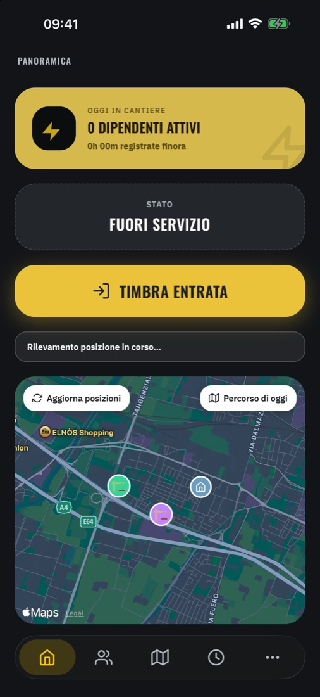
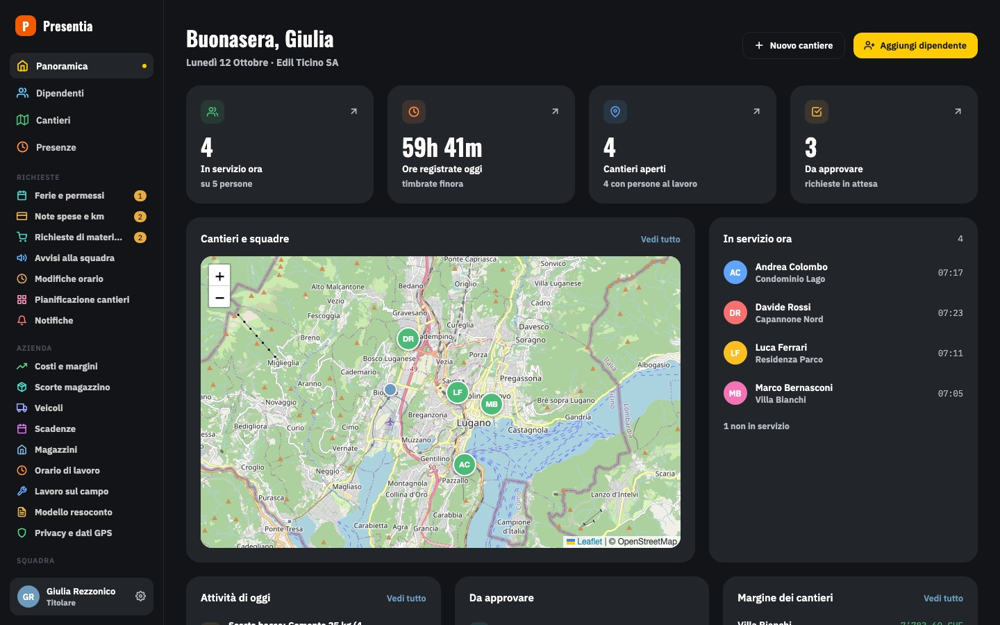

Timbratura automatica
Il telefono riconosce l’arrivo in cantiere e timbra da solo entrata e uscita. Oppure si timbra con un tocco.
Timbratura dal telefono, rapportini con foto e firma, ore pronte per le paghe e il margine di ogni cantiere. Tutto in un’app, senza fogli e senza telefonate.
Nessuna carta di credito. Il codice arriva subito e sei operativo in dieci minuti.
Pensata per chi lavora con le mani: poche schermate, pulsanti grandi, funziona anche dove il segnale è debole.
Il telefono riconosce l’arrivo in cantiere e timbra da solo entrata e uscita. Oppure si timbra con un tocco.
Ore, lavori e materiali di ogni giorno, con le foto e la firma del cliente sul telefono.
Riepilogo del mese in PDF, CSV o nel tuo modello Excel. Pausa pranzo e straordinari già calcolati.
Manodopera, materiali e spese di ogni cantiere a confronto con il preventivo: vedi subito se ci stai guadagnando.
Il dipendente chiede il rimborso con la foto dello scontrino, tu approvi con un tocco.
Chi ha timbrato in quale cantiere, a colpo d’occhio.
Scrivi alla squadra e vedi chi ha letto. Dal cantiere ti chiedono quello che manca.
Pianifica i cantieri giorno per giorno, approva ferie e permessi, non dimenticare revisioni e patentini.
Il titolare vede tutto dalla Panoramica; il dipendente apre l’app e trova il suo cantiere, il pulsante per timbrare e il rapportino.

A fine mese i conti si fanno alla scrivania. Il pannello web del titolare ha gli stessi dati dell’app, in grande.

In Svizzera e in Italia la posizione dei dipendenti non si può seguire liberamente. Presentia nasce con questo in mente, così tu sei tranquillo e loro anche.
Non serve un tecnico e non serve cambiare modo di lavorare.
Compili quattro campi e ricevi subito il codice della tua azienda.
Scarichi l’app, inserisci orari di lavoro e i primi cantieri sulla mappa.
Ogni dipendente entra con il suo numero di telefono e un codice. Da domani si timbra.
14 giorni gratis, con tutte le funzioni. Se non fa per te, non devi fare nulla.
Prova gratis 14 giorniDomande? Scrivi a presentia.app@gmail.com